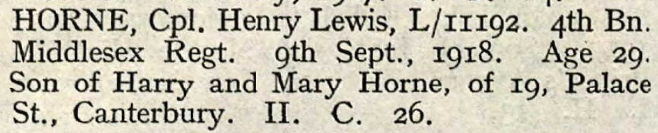
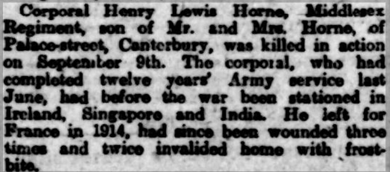
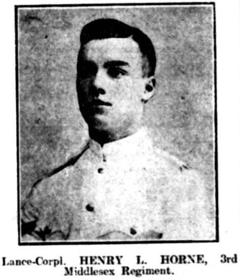

Henry Lewis Horne cNov 1888 - 1918
[ Home ] | [ Calendar ] | [ Surnames Index ] | [ Errors ] | [ Family History ]The child of Harry Horn (a constable metropolitan police officer) and Mary Wood, Henry Horne, the first cousin twice-removed on the father's side of Nigel Horne, was born in Enfield, London, England c. Nov 18881,2,3,4,5.
During his life, he was living at Bush Hill, Edmonton, London, England on 5 Apr 18911; at 3 Jackson Road, Barnet, London on 31 Mar 19012; and in Barrackpore, India on 2 Apr 19119. He served in the army from 1906 to 1918 (regiment: Duke Of Cambridge's Own (Middlesex Regiment); Rank: A/cpl. Service number: L/11192).
He died on 9 Sept 1918 in France4,6,7,8 and was buried at Vaulx Hill Cemetery, Vaulx-Vraucourt, Pas-de-Calais, France on 9 Sept 1918.
Parents
- Harry was born on 11 Aug 1864
- Mary Jane was born on 4 Oct 1866
Citations
- 1891 England, Wales & Scotland Census - Findmypast (was age 2 and the son of the head of the household)
- 1901 England, Wales & Scotland Census - Findmypast (was age 12 and the son of the head of the household)
- British Army Service Records - Findmypast
- Commonwealth War Graves Commission Debt Of Honour - Findmypast
- England & Wales births 1837-2006 - Findmypast
- British Armed Forces Soldiers' Wills 1850-1986 - Findmypast
- Find A Grave http://www.findagrave.com
- Soldiers Died In The Great War 1914-1919 - Findmypast
- 1911 Census for England & Wales - Findmypast (was age 22)
Media
Henry Lewis Horne - CWGC

Kentish Express - 9 Nov 1918

Henry Lewis Horne

Britain, Campaign, Gallantry & Long Service Medals & Awards - GBM/MCI/1962652
England & Wales births 1837-2006 - BMD/B/1888/4/AZ/000274/047
Soldiers died in the Great War 1914-1919 - GBM/WWISD/0496224
British Army Service Records - GBM/WO96/324/1224595
Commonwealth War Graves Commission Debt Of Honour - GBM/CWGC/ROLLOFHONOUR/000460366
Britain, Campaign, Gallantry & Long Service Medals & Awards - GBM/MCI/1962653
1911 Census For England & Wales - GBC/1911/RG14/34988/0489/16
Britain, First World War Campaign Medals - GBM/WO329/WWI/CM/5989893
British Armed Forces Soldiers' Wills 1850-1986 - GBM/SOLD-WILL-SCR/0033002
1901 England, Wales & Scotland Census - GBC/1901/0008358013
Family Tree

Map
Generated by ged2site. Last updated on Jul 3, 2024
Known Issues
Surname is different from both parents
Burial date (09 Sep 1918) has no citations
Location for the event between 1906 and 1918 is empty